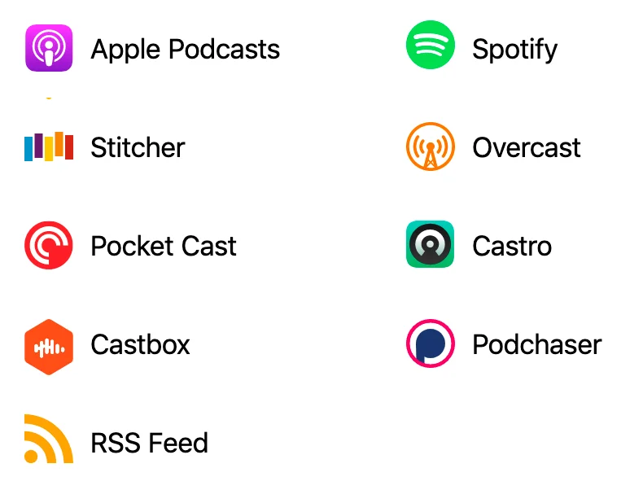

AWS AI & Machine Learning Podcast
Welcome to my podcast!
Videos are available on my YouTube channel.
The audio version is available on Apple Podcasts, Spotify, Deezer, and more. Visit my audio podcast page to subscribe and be notified of future episodes.
